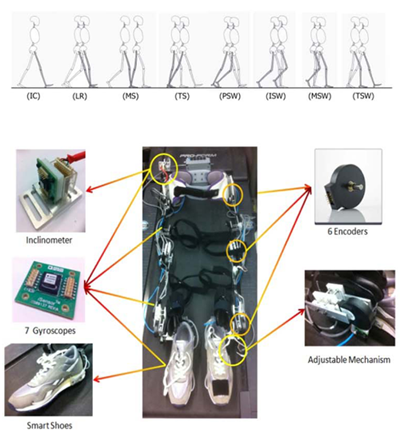
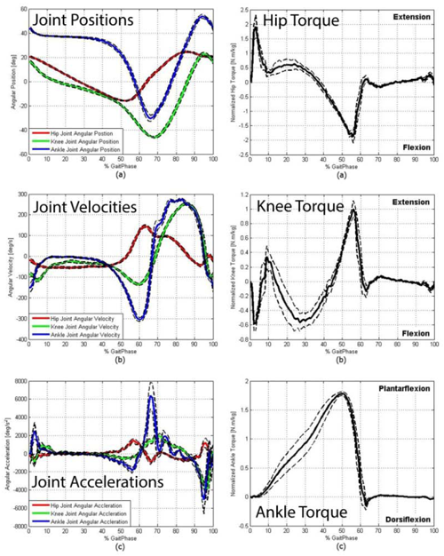

<!DOCTYPE html PUBLIC "-//W3C//DTD XHTML 1.0 Transitional//EN" "http://www.w3.org/TR/xhtml1/DTD/xhtml1-transitional.dtd">
<html xmlns="http://www.w3.org/1999/xhtml" lang="en" xml:lang="en">
<head>
	<meta http-equiv="content-type" content="text/html; charset=utf-8" />
	<meta name="description" content="MSC Lab Homepage" />
	<meta name="keywords" content="mechanical,systems,control" />
	<meta name="author" content="Raechel Tan" />
    <link rel="icon" href="../../../mscicon.ico" />
    <link href='http://fonts.googleapis.com/css?family=PT+Sans|Brawler' rel='stylesheet' type='text/css' />
	<link rel="stylesheet" type="text/css" href="../../../style.css" media="all" />
	<title>MSC Lab - Passive Exoskeleton Design for Human Motion Analysis</title>
</head>

<body>
<div id="container980"><!-- Use"containerfull" for 100% width. For fixed width, use "container980", "container760" or "container600" (the number is the layout width in pixels). -->
	<div id="header">
    	
	</div>
	<div id="menu"> 
		<ul>     
			<li><a href="../../../index.html">Home</a></li>
			<li><a href="../../../people.html">People</a>
            	<ul>
                	<li><a href="../../../people/tomizuka.html">Prof. Masayoshi Tomizuka</a></li>
                    <li><a href="../../../people/students.html">Students</a></li>
                    <li><a href="../../../people/visitors.html">Visitors</a></li>
                    <li><a href="../../../people/alumni.html">Alumni</a></li>
                    <li><a href="../../../people/prev_visitors.html">Previous Visitors</a></li>
                </ul>
            </li>
			<li><a class="current" href="../../../research.html">Research</a>
            	<ul>
                	<li><a href="../../robotics.html">Robotics</a></li>
                    <li><a href="../../human.html">Human Mechatronics</a></li>
                    <li><a href="../../disk.html">Hard Disk Drive Control</a></li>
                    <li><a href="../../precision.html">Precision Motion Control</a></li>
                    <li><a href="../../automotive.html">Automotive Control Systems</a></li>
                    <li><a href="file:///C|/Users/Raechel 2/Dropbox/research.html">more...</a></li>
                </ul>
            </li>
            <li><a href="../../../publications.html">Publications</a>
            	<ul>
                	<li><a href="../../../publications/papers_robotics.html">Robotics</a></li>
                    <li><a href="../../../publications/papers_human.html">Human Mechatronics</a></li>
                    <li><a href="../../../publications/papers_disk.html">Hard Disk Drive Control</a></li>
                    <li><a href="../../../publications/papers_precision.html">Precision Motion Control</a></li>
                    <li><a href="../../../publications/papers_automotive.html">Automotive Control Systems</a></li>
                    <li><a href="../../../publications.html">more...</a></li>
                </ul>
            </li>
            <li><a href="../../../resources.html">Resources</a>
            	<ul>
                	<li><a href="../../../resources/news.html">News and Announcements</a></li>
                    <li><a href="../../../resources/network.html">Network and Printing</a></li>
                    <li><a href="../../../resources/courses.html">Prof. Tomizuka's Courses</a></li>
                    <li><a href="../../../resources/conferences.html">Upcoming Conferences</a></li>
                </ul>
            </li>
            <li><a href="../../../misc.html">Miscellaneous</a>
            	<ul>
                	<li><a href="../../../misc/logo.html">MSC Logo</a></li>
                    <li><a href="../../../misc.html">more...</a></li>
                </ul>
            </li>
            <li><a href="../../../contact.html">Contact Us</a></li>
		</ul>
	</div>

	<div id="main">
    	<div id="navtree">
			<p><a href="../../../research.html">Research</a> &gt; <a href="../human.html">Human Mechatronics</a> &gt; <a href="human_assist.html">Mechatronics for Human Assistance</a> &gt; <a href="human_assist_exo.html">Passive Exoskeleton Design for Human Motion Analysis</a></p>
		</div>
    
		<div id="content">
        	<div id="sidebar">
			<div class="sidebarbox">
               <h3>Contents:</h3>
				<ul class="sidemenu">
					<li><a href="#motivation">Motivation and Approach</a></li>
                    <li><a href="#results">Main Results</a></li>
                    <li><a href="#pub">Recent Key Publications</a></li>
				</ul>
			</div>
			</div>

          <h2>Passive Exoskeleton Design for Human Motion Analysis</h2>
		  <h3 id="motivation">Motivation and Approach</h3>
		  <p>In this research, a 7-DOF passive exoskeleton is designed to combine kinematic sensing and human joint torque estimation. The designed passive exoskeleton mainly allows motions in the sagial plane. Several motion sensors and force sensors are utilized including encoders, gyroscopes, and smart shoes; therefore, the joint kinematics and ground contact forces can be measured. We also developed a dynamic model of human walking for estimating the human joint torque. Since the kinematic constraints of the lower-limb extremity during walking vary upon gait phases, the walking dynamic model is described by multiple sub-dynamic models derived using Lagrangian mechanics.</p>
		  <p align="center"></p>
		  <p align="center">Hardware development of the 7-DOF passive exoskeleton</p>
		  <p>&nbsp;</p>
		  <h3 id="results">Main Results</h3>
		  <p>The joint kinematics measurement and torque estimation were veried by experiments. A healthy male subject with a normal gait pattern wore the exoskeleton suit and walked on a treadmill with a constant speed. The proposed passive exoskeleton could measure joint kinematics and estimate joint torque accurately as shown in the figure below.</p>
		  <p align="center"></p>
		  <p align="center">Joint torque estimation results</p>
		  <p>&nbsp;</p>
		  <h3 id="pub">Recent Key Publications</h3>
		  <ol>
		    <li>K. Kanjanapas and M. Tomizuka, "7 Degrees of Freedom Passive Exoskeleton for Human Gait Analysis: Human Joint<br />
		      Motion Sensing and Torque Estimation During Walking," in <em>Proceedings of IFAC Symposium on Mechatronic Systems</em>,<br />
	        pp. 285-292, 2013.</li>
	      </ol>
      </div>
		<div class="clear">&nbsp;</div>
	</div>

	<div id="credits">
		<p>&copy; 2015 Mechanical Systems Control Laboratory &nbsp;&nbsp; | &nbsp;&nbsp; <a href="mailto:dwai213@berkeley.edu" target="_blank">Contact the Webmaster</a></p>
	</div>
</div>
</body>
</html>